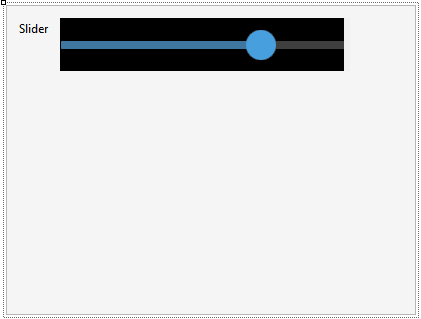
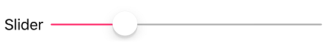
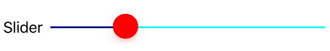
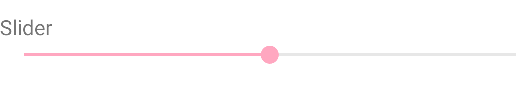
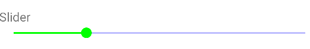

The Slider control provides a graphic interface that allows you to select a value from a predefined range by sliding an indicator.
The control is composed of:
The control's value will only be modified when the thumb is released; the value shown in the bubble (which is activated with the Display Value property) is modified when sliding the thumb.
This control may only be applied to attributes or variables based on Numeric type.

| Min Value |
Indicates the minimum possible value that the control may represent. The default value is 1. The value of this property cannot be greater than the maximum value. |
| Max Value |
Indicates the maximum value that the control may have. The default value is 5. The value of this property cannot be lower than the minimum value. |
| Step |
The control can represent continuous or discrete values. In the case of discrete values, that must be indicated in this property. Entering a value other than zero implies that values are discrete. For example, if the control goes from 1 to 5, a step of 1 could be indicated, and in this case, the only values available for the field would be 1, 2, 3, 4, or 5, but not 1.7, for example. The default value is 0, which means that values are continuous. |
| Display Value |
Indicates whether the control should display the value. This value is shown as a floating bubble above the slider (iOS only). Note: If the control is in the upper part of the screen, it could lack the space required to display the value, and in that case, it will not be shown. To avoid this undesired behavior, it is advisable to leave a space between the control and the application bar. It is False by default, meaning that the bubble is not shown. |
| Value Theme Class |
Theme for the Display Value. Valid classes for this property are the TextBlock class and all its sub-classes. |
| Min Value Image |
Allows setting an image representing the control's minimum value. Available at design time and runtime. Note: Available only for iOS, as of GeneXus 16 upgrade 3. |
| Max Value Image |
Allows setting an image representing the control's maximum value. Available at design time and runtime. Note: Available only for iOS, as of GeneXus 16 upgrade 3. |
The valid values for any of these properties are numeric constants, which must be of the same type as the variable to which the control is applied. For example, if the variable is of the type N(4.0), the value “1” may be entered, but the value “1.5” may not be entered. This value is valid when the variable is of the N(4.1) type.
The control may be modified through the specific Theme Class created for that control Slider Theme class.
| Thumb Color | Enables color changes for the Thumb. |
| Selected Bar Color | Enables color changes for the bar selected. |
| Unselected Bar Color | Enables color changes for the bar not selected. |
| Value Theme Class | Enables changes to the design of the bubble that shows the slider value (it will only be viewed when the Display Value property is set to True). |
Note: This Theme Class is only available for iOS as of GeneXus 16 upgrade 3.
Available for Android as of GeneXus 16 Upgrade 11.
In the case of the Android generator, it is possible to use the properties within the class Application Class for Smart Devices.
| Control Activate color | Changes the Thumb color and the color of the bar selected. |
| Control Normal Color | Changes the color of the bar not selected. |
| Default Theme Class | Custom Class | |
|
iOS |
 |  |
| Android |  |  |
| ControlValueChanged | It triggers an event when the value is changed. |
For example, if the variable associated with the control is &Slider, then the following event is valid:
Event &Slider.ControlValueChanged
// event code...
EndEvent